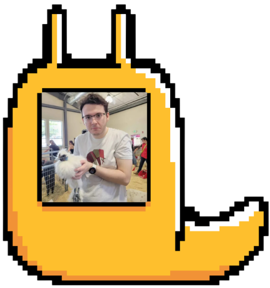

Welcome To Hot Slugs Near You!!!
Introduction
Welcome to Hot Slugs Near You!!! A silly name, we know LOL. But we hope that this website can act as a fun way for UCSC Students, and Santa Cruz residents alike, to share their banana slugs! It's quite simple really. Find a slug? Take a pic and post it to our site! Add a fun caption and make sure to include where you spotted your slug. Your post will appear on our site's map as a marker that other users can click on, view, and comment!
Tutorial
Step 1:
Press start on the homepage to begin! You probably already figured this part out. From there, take a look at our Slug Locator! Click and drag on the map to move around and view other areas.
Step 2:
Go ahead and find a slug marker on the map. When you click it, ta-da! Another user's post will pop-up. From there, you can see the user's profile name, the image of the slug they found, where they found it, and other details.
Step 3:
Now it's time to make your own post! Scroll past the map on the main page and find the "I Found A Slug" button near the bottom. Clicking here will prompt a pop-up for you to create your own post!
Step 4:
Be sure to include the image of your slug, where it was found, and any other interesting details you think are post-worthy (Ex: was wet, on a tree, under a rock, etc.)! Click Submit and you're done!
Meet The Creators
Sophie Morris
Hello! My name's Sophie (She/Hers) and I was in charge of a lot of the
HTML elements for this site, as well as its
base JavaScript functionality. I had no coding experience
beyond Python before entering this class. This project defintely wasn't easy
as a beginner so I'm pretty proud of how far I've come. In terms of my passions
I'm actually a creative writer! I'm hoping to be a game writer or narrative designer one day!
Email: sophiemorris2741@gmail.com
LinkedIn: "https://www.linkedin.com/in/sophie-morris2741/"
Elio Kim
Hello hello! I'm Elio (they/he), a digital artist hoping to make art for games, and I contributed to the CSS styling of the website! I also did some proofreading and debugging for the HTML and JavaScript code that our site runs on. I had very little coding experience (I only learned Python in my senior year of high school) prior to taking this class, so I've had a lot of fun learning HTML, JavaScript, and CSS this quarter :) Feel free to shoot me an email here or contact me on LinkedIn!
Rhys Muth
Hey! I'm Rhys (she/they), and I'm a digital and traditional artist! I mainly just draw silly little cartoons and illustrations and am working towards
being a tattoo artist, but I also love games and design! I mainly contributed to the CSS styling of this site, but I also worked with the HTML
a little bit. I didn't have much programming experience before this outside of a couple robotics classes in high school, and I had a lot of fun
expanding my knowledge and seeing what else I could do with coding!
Email: remuth@ucsc.edu
Instagram: @starfishhie
>Ren Buendia
Hi, I'm Ren (they/hers) and I worked on implementing the map for this project using JavaScript. I have experience in making personal websites using HTML, CSS, and JavaScript, however, my main passion is being a graphic designer and a content creator. In my spare time, I like to collect Pokemon cards and draw!
You can check out my Instagram at @rennyykins or connect with me on LinkedIn!
Alexander Adams
Hello! My name is Alexander and I helped with implementing the slug marker system on the slug locator map. My only coding experience prior to this was building a small game within Unity for a school project. You can contact me at AlexanderAdams2077@gmail.com or connect with me on LinkedIn or Discord.
Marisa Wong
Hey, I contributed to the assets and CSS for this project! Talk to me about illustration, animation, painting, printmaking, and games!
Email: wwong32@ucsc.edu